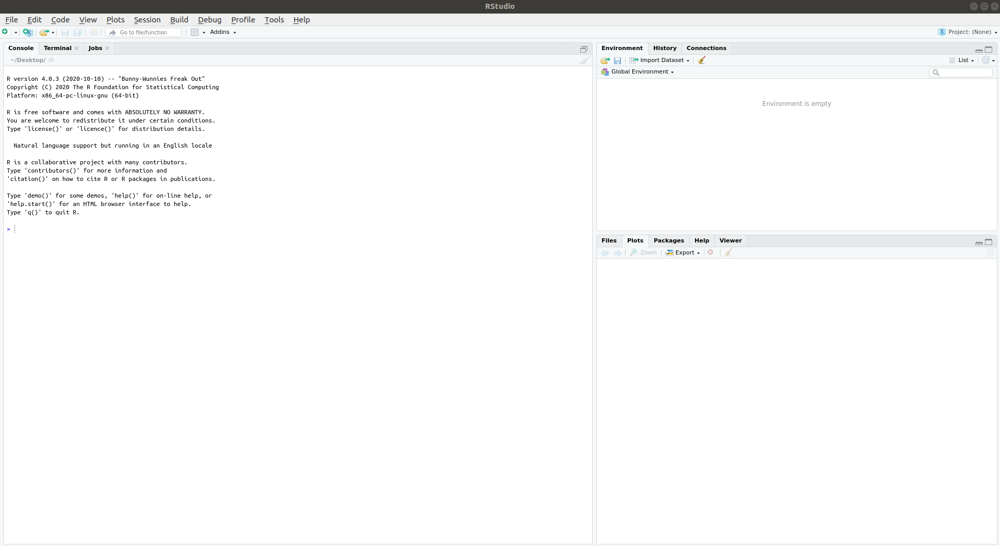

1 R and RStudio
The purpose of this chapter is to get you started learning a new language! Throughout BIOSCI220 you will be introduced to tools required to critically analyse and interpret biological data, and processing into biological information.
Throughout this module you will be expected to use R and RStudio weekly. It is highly recommended that you familiarise yourself with these environments using the computer, on which, you plan to carry out the majority of your work. If this is a lab computer then R and RStudio will already been installed. If you choose to use these then you should still complete the exercises below to familiarise yourself with the software. Another option available is the use of RStudio Cloud; here, everything is run in a web browser (on a remote server) and doesn't require you to download the software onto your personal computer.
However, if you plan to use your personal computer then you will need to install both R and RStudio. Follow the directions in [installing-r-and-rstudio] to do this.
1.1 Learning Objectives
- Define the difference between
RandRStudio- Express the benefits and issues associated with these software being used in the scientific community. Specifically,
- summarise the benefits and drawbacks associated with the open-source paradigm,
- discuss the concept of reproducible research and outline its importance
- Express the benefits and issues associated with these software being used in the scientific community. Specifically,
- Distinguish between different data types (e.g., integers, characters, logical, numerical)
- Explain what an
Rfunction is; describe what an argument to anRfunction is - Explain what an
Rpackage is; distinguish between the functionsinstall.packages()andlibrary() - Explain what a working directory is in the context of
R - Interpret and fix basic
Rerrors. For example
## Error in library(fiddler): there is no package called 'fiddler'and
## Warning in file(file, "rt"): cannot open file 'paua.csv': No such file or
## directory## Error in file(file, "rt"): cannot open the connection- Use the appropriate
Rfunction to read in a.csvdata; carry out basic exploratory data analysis usingtidyverse(use the pipe operator,%>%when summarising adata.frame); create simple plots of the data.
1.2 Introduction to R and RStudio?

R is the pheromone to RStudio's PDA.
R is a language. Specifically a programming language; it's the way you can speak to your computer to ask it to carry out certain computations.
RStudio is an integrated development environment (IDE). This means it is basically an interface, albeit a fancy one, that makes it easier to communicate with your computer in the R language. The main benefit is the additional features it has that enable you to more efficiently speak R.
Note R and RStudio are two different pieces of software; for this course you are expected to download both. As you'd expect the PDA depends on the pheromones (i.e., RStudio depends on R) so you have to download R to use RStudio!
1.2.1 Why?
The selling pitch of this course states that ...biological research has actually been heavily quantitative for 100+ years... and promises that ...it is now essential for biology students to acquire skills in working with and visualising data, learning from data using models.... We're not making it up! If you need convincing that quantitative and programming skills are essential to graduate in all scientific disciplines have a read of the following.
1.2.1.1 WhyR?
- It's free
- It's open source
- There are no guarantees
- But it's always under scrutiny
- robust
- It's available for all operating systems (Windows, Linux, and Mac)
- There is a huge online support network
- It's extremely flexible; if you can code it you can do it!
- It facilitates reproducibility
1.2.1.2 Why RStudio?
- Speaks nicely to
R - There is a huge online support network
- Offers many other features and tools to make your workflow with
Reasier
1.2.2 Installing R and RStudio
As mentioned above RStudio depends on R so there is an order you should follow when you download these software.
Download and install
Rby following these instructions. Make sure you choose the correct operating system; if you are unsure then please ask either a TA or myself.Download and install
RStudioby going here choosing RStudio Desktop Open Source License Free and following instructions. Again if you are unsure then please ask either a TA or myself.- Check all is working
- Open up
RStudiofrom your computer menu, the icon will look something like this (DO NOT use this icon
(DO NOT use this icon  , this is a link to
, this is a link to Rand will only open a very basic interface) - Wait a little and you should see
RStudioopen up to something similar to the screenshot below  - Pay close attention to the notes in the screenshot and familiarise yourself with the terms.
- Finally, in the Console next to the prompt type
1:10and press enter on your keyboard. Your computer should say something back you (in the Console)! What do you think you were asking it to do? Does the output make sense?1
- Open up
If you get stuck at any of the steps above then please ask either a TA or myself. It is imperative for the rest of the course that you complete the steps above.
1.2.3 Getting started
As in step 3. above open up RStudio from your computer menu, the icon will look something like this  . Using the diagram above identify the different panes:
. Using the diagram above identify the different panes:
- Console where you directly type command in and communicate with your computer (via the language
R). - Environment pane
- Files pane
Some terminology
- Running code: the act of telling R to perform an act by giving it commands in the console.
- Objects: where values are saved in (see later for creating an object.
- Script: a text file containing a set of commands and comments.
- Comments: notes written within a Script to better document/explain what's happening
1.2.4 R Scripts (a .r file)
Go File > New File > R Script to open up a new Script
A new (fourth) pane should open up in the top left of RStudio, your Console will have shrunk in size to accommodate this extra pane. This file will have a .r extension and is where you can write, edit, and save the R commands you write. It's a dedicated test editor for your R code (very useful if you want to save your code to run at a later date). The main difference between typing your code into a Script vs Console is that you edit it and save it for later! Remember though the Console is the pane where you communicate with your computer so all code you write will have to be Run here. There are two ways of running a line of code you've written in your Script
- Ensure your cursor is on the line of code you want to run, hold down Ctrl and press Enter.
- Ensure your cursor is on the line of code you want to run, then use your mouse to click the Run button (it has a green arrow next to it) on the top right of the Script pane.
Type 1:10 in your Script and practise running this line of code using both methods above. Not that if you've Run the code successfully then your computer will speak back to you each time via the Console
1.2.5 Writing Comments
Comments are notes to yourself (future or present) or to someone else that are, typically, written interspersed in your code. Now, the comments you write will typically be in a language your computer doesn't understand (e.g., English). So that you can write yourself notes in your Script you need to tell your computer using the R language to ignore them. To do this precede any note you write with #, see below. The # is R for ignore anything after this character.
Now remember when you want to leave your R Session you'll need to Save your Script to use it again. To do this go File > Save As and name your file what you wish (remember too to choose a relevant folder on your computer!).
1.2.6 Data types
 Artwork by @allison_horst
Artwork by @allison_horst
Here we're covering data types in R (e.g., integers, doubles/numeric, logical, and characters).
- Integers are whole values like 1, 0, 220. These are classified
"integer"orintinR. - Numeric values are a larger set of values containing integers but also fractions and decimal values, for example -56.94 and 1.3. These are classified
"numeric"ornumordblinR. Logicals are either TRUE or FALSE. These are classified
"logical"orlglinR.Characters are text such as “Charlotte”, “BIOSCI220”, and “Statistics is the greatest subject ever”. Note that characters are denoted with the quotation marks around them and are classified
"character"orchrinR.
## As an example we're going to as our computer using R what it classified the character string "Charlotte" as
class("Charlotte")## [1] "character"1.2.7 Creating Objects
Objects are created values using the symbols <- (an arrow formed out of < and -). Like we, typically, write an equation the left-hand side is the Object we're defining (creating) and the right-hand side is the stuff we're defining it as. For example, below I'm creating the Object my_name and assigning it the character string of my first name
my_name <- "Charlotte"So now the Object my_name ‘contains’ the value "Charlotte". Another assignment to the same object will overwrite the content.
my_name <- "Moragh"To check the content of an Object you can simply as your computer to print it out for you (in R).
my_name## [1] "Moragh"Note: R is case sensitive: it treats my_name and m=My_Name as completely different objects.
An object can be assigned a collection of things:
my_names <- c("Charlotte", "Moragh", "Jones-Todd")
my_names## [1] "Charlotte" "Moragh" "Jones-Todd"some_numbers <- c(1,4,5,13,45,90)
some_numbers## [1] 1 4 5 13 45 90An Object can also be an entire dataset, see Exploratory Data Analysis (EDA) below.
1.2.8 R functions
Functions (or command) perform tasks in R. They take in inputs called arguments and return outputs. You can either manually specify a function’s arguments or use the function’s default values. For example, the function seq() in R generates a sequence of numbers. If you just run seq() it will return the value 1. That doesn’t seem very useful! This is because the default arguments are set as seq(from = 1, to = 1). Thus, if you don’t pass in different values for from and to to change this behaviour, R just assumes all you want is the number 1. You can change the argument values by updating the values after the = sign. If we try out seq(from = 2, to = 5) we get the result 2 3 4 5 that we might expect.
1.2.9 R packages
The base installation of R comes with many useful packages as standard. These packages will contain many of the functions you will use on a daily basis. However, as you start using R for more diverse projects (and as your own use of R evolves) you will find that there comes a time when you will need to extend R’s capabilities. Happily, many thousands of R users have developed useful code and shared this code as installable packages. You can think of a package as a collection of functions, data and help files collated into a well defined standard structure which you can download and install in R.
To install a package from CRAN you can use the install.packages() function. For example if you want to install the remotes package enter the following code into the Console window of RStudio (note: you will need a working internet connection to do this)

CRAN is like a centralised library with thousands of books in stock.
To access the contents of a book (package) you first need to request it for (install it into) your local library (your computer)

Your can only access books in your local library.
install.packages('the.package.name')
To access the knowledge in a particular book (use the function is the package) you need to tell your computer via R to go get the book of the shelf. Then you have access to all the functions it contains!
library(the.package.name)1.2.10 R Errors
Sometimes rather than doing what you expect it to your computer will return an Error message to you via the Console prefaced with **Error in...* followed by text that will try to explain what went wrong. This, generally, means something has gone wrong, so what do you do?
- Read it! THE MESSAGES ARE WRITTEN IN AS PLAIN A ENGLISH AS POSSIBLE
- DO NOT continue running bits of code hoping the issue will go away. IT WILL NOT.
- Try and work out what it means and fix it
Sometimes your computer will return a warning messages to you prefaced "Warning:". These can sometimes be ignored as they may not affect us. However, READ THE MESSAGE and decide for yourself. Occasionally, also your computer will write you a friendly message, just keeping you up-to date with what it's doing, again don't ignore these they might be telling you something useful!
1.2.11 Working directories

You need to tell your computer where to look!
Look at the top of your Console. You will see something like ~/Desktop/ or C://Users/... (it won't be an exact match of course). This is the 'address' of where your computer is looking. Now, run getwd() and see what output you get (it will be the same as written on the top of your Console pane. This is because getwd() stands for get the current workingdirectory (i.e., the current directory you are currently working in) e.g.,
getwd()## [1] "/home/cjon911/Git/BIOSCI220/coursebook"You should ensure that you are aware of which directory you're working in (which folder RStudio is looking in by default) as this is important later on when we come to reading in files and saving our work!
1.2.11.1 Changing address
So you're not where you want to be!
Click Session > Set Working Directory > Choose Directory > Chose where you want to go
Now notice that something has been written in your Console something similar to setwd("~/Git/BIOSCI220/data"). Now setwd() stands for set your workingdirectory. If you know the address of the directory you want to work in without having to point-and-click you could use this command directly, in this case you've used the point-and-click to do it and RStudio has helpfully written out your choices as an R command.
1.2.12 Getting help

[Where to go?]
Let's say we want to learn more about the function mean() (we can take a wild guess at what it calculates, but... what if we didn't know for sure. There are two ways we can ask within RStudio
?mean()or
help(mean)Try both and see what pops up in your right-hand bottom pane!
Failing that Google is (often) your friend

1.3 Exploratory Data Analysis (EDA)
To finish off this section and to ensure you're all set to go for the rest of the module we're going to carry out some exploratory data analysis and visualisations on some real-world data :-)
For this module we will be using tidyverse. 'tidyverse' is a collection of R packages that all share underlying design philosophy, grammar, and data structures. They are specifically designed to make data wrangling, manipulation, visualisation, and analysis simpler.
To install all the packages that belong to the tidyverse run
## request (download) the tidyverse packages from the centralised library
install.packages("tidyverse")To tell your computer to access the tidyverse functionality in your session run (Note you'll have to do this each time you start up an R session):
## Get the tidyverse packages from our local library
library(tidyverse)1.3.1 Reading in data from a .csv file
First off download this .csv file onto your computer (remember which folder you saved it in!)
To read the data into RStudio
In the Environment pane click Import Dataset > ** From Excel** > ** From Text (readr)** > Browse > Choose your file, remembering which folder you downloaded it to > Another pane should pop up, check the data looks as you might expect > Import You should now notice that in the Environment pane there is something listed under Data (this is the name of the data.frame Object containing the data we will explore)
Now notice how in the Console a few lines of code have been added. These are the commands you were telling your computer via the point-and-click procedure you went through! Notice the character string inside read_csv()... This is the full 'address' of your data (the folder you saved it in). When you tell your computer to look for something you need to tell it exactly where it is! Remember the getwd() command above, this tells you the default location RStudio will look for a file, if your file is not in this folder you have to tell it the full address.
1.3.2 Using functions to explore the data
Automatically RStudio has run the command View() for you. This makes your dataset show itself in the top left pane. It's like looking at the data in Excel. Follow along with the commands below, I recommend that you open up a new Script and use that to write and save your commands for later. Don't forget to ensure you have read the paua into your session (all commands below assume that your data Object is called paua, if you've called it something different then just replace paua with whatever you've called it below.
Now let's go ahead and use some functions to ask and answer questions about our data. The first thing you should always do is view any data frames you import.
- Let's have a look at your data in the Console
paua## # A tibble: 60 x 3
## Species Length Age
## <chr> <dbl> <dbl>
## 1 Haliotis iris 1.8 1.50
## 2 Haliotis australis 5.4 11.9
## 3 Haliotis australis 4.8 5.42
## 4 Haliotis iris 5.75 4.50
## 5 Haliotis iris 5.65 5.50
## 6 Haliotis iris 2.8 2.50
## 7 Haliotis australis 5.9 6.49
## 8 Haliotis iris 3.75 5.00
## 9 Haliotis australis 7.2 8.56
## 10 Haliotis iris 4.25 5.50
## # … with 50 more rowsSo, what does this show us?
A tibble: 60 x 3: Atibbleis a specific kind of data frame inR. Ourpauadataset has60rows (i.e., 60 different observations). Here, each observation corresponds to a Paua shell.3columns corresponding to 3 variables describing each observation.Species,Length, andAgeare the different variables of this dataset.- We then have a preview of the first 10 rows of observations corresponding to the first 10 Paua shells. ``
... with 50 more rowsindicates there are 50 more rows to see, but these have not been printed (likely as it would clog our screen)
Let's look at some other ways of exploring the data.
- Using the
View()command (recall from above) to explore the data in a pop-up viewer
View(paua)- Using the
glimpse()command for an alternative view
glimpse(paua)## Rows: 60
## Columns: 3
## $ Species <chr> "Haliotis iris", "Haliotis australis", "Haliotis australis", …
## $ Length <dbl> 1.80, 5.40, 4.80, 5.75, 5.65, 2.80, 5.90, 3.75, 7.20, 4.25, 6…
## $ Age <dbl> 1.497884, 11.877010, 5.416991, 4.497799, 5.500789, 2.500972, …glimpse() will give you the first few entries of each variable in a row after the variable name. Note also, that the data type of the variable is given immediately after each variable’s name inside < >.
1.3.2.1 The pipe operator %>%
A nifty tidyverse tool is called the pipe operator %>%. The pipe operator allows us to combine multiple operations in R into a single sequential chain of actions.
Say you would like to perform a hypothetical sequence of operations on a hypothetical data frame x using hypothetical functions f(), g(), and h():
- Take
xthen - Use
xas an input to a functionf()then - Use the output of this as an input to a function
g()then - Use the output of this as an input to a function
h()
This is where the pipe operator %>% comes in handy. %>% takes the output of one function and then “pipes” it to be the input of the next function. Furthermore, a helpful trick is to read %>% as “then” or “and then.” For example, you can obtain the same output as the hypothetical sequence of functions as follows:
x %>%
f() %>%
g() %>%
h()You would read this sequence as:
- Take x then
- Use this output as the input to the next function f() then
- Use this output as the input to the next function g() then
- Use this output as the input to the next function h()
So to calculate the mean Age of each Species in the paua dataset we would use
paua %>%
group_by(Species) %>%
summarize(mean_age = mean(Age))## # A tibble: 2 x 2
## Species mean_age
## * <chr> <dbl>
## 1 Haliotis australis 7.55
## 2 Haliotis iris 4.40You would read the sequence above as:
- Take the
pauadata.frame then - Use this and apply the
group_by()function to group bySpecies - Use this output and apply the
summarize()function to calculate the mean Age of each group (Species), calling the resulting numbermean_age
1.3.3 Basic plotting (for your own purposes)
The payoff is so clear: you make informative plots that help you understand data.
- Boxplot
{r box, echo = TRUE, eval = TRUE) plot(paua)
So what have we asked our computer to do here? Given what we know about the types of data our paua Object contains what plots do you think would be most appropriate for each variable? Below is some example code; each line of code will produce a plot (perhaps not a sensible one though). What do you think? What is each plot showing us?
boxplot(Length ~ Species, data = paua)
boxplot(Age ~ Species, data = paua)
plot(Age ~ Length, data = paua)
boxplot(Age ~ Length, data = paua)
plot(paua$Age)1.4 Other resources: optional but recommended
 Artwork by @allison_horst
Artwork by @allison_horst
You should have seen the numbers 1 to 10 printed out as a sequence.↩